Dokumentasi Kegiatan
Halaman ini memuat dokumentasi beberapa kegiatan yang telah saya ikuti, baik dalam lingkup akademik maupun non-akademik. Setiap pengalaman ini memberikan kontribusi besar terhadap pengembangan diri saya, baik secara profesional maupun personal.
 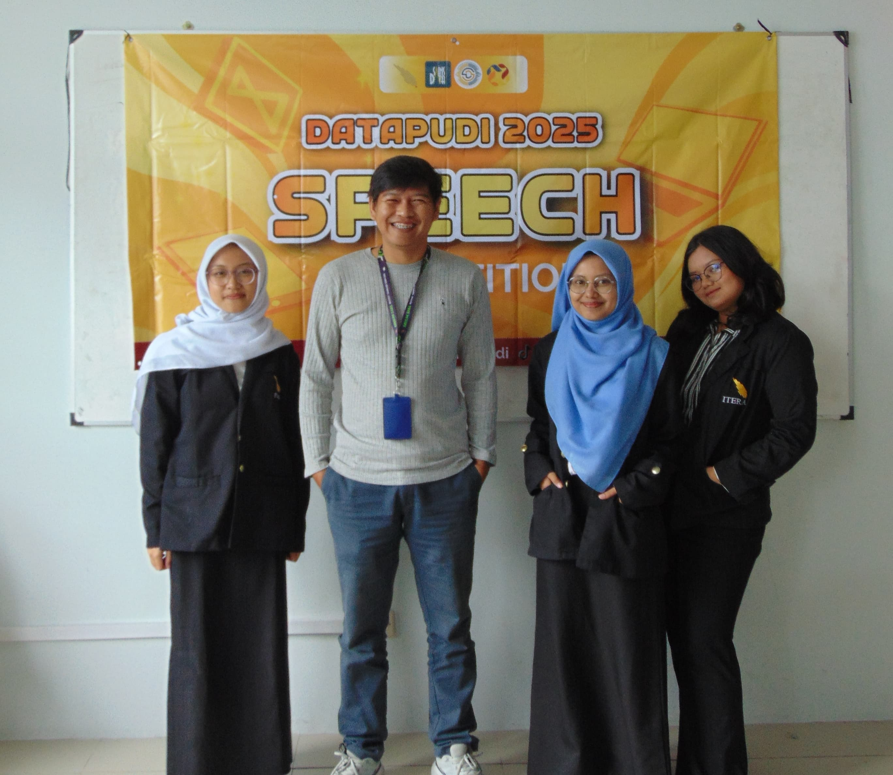
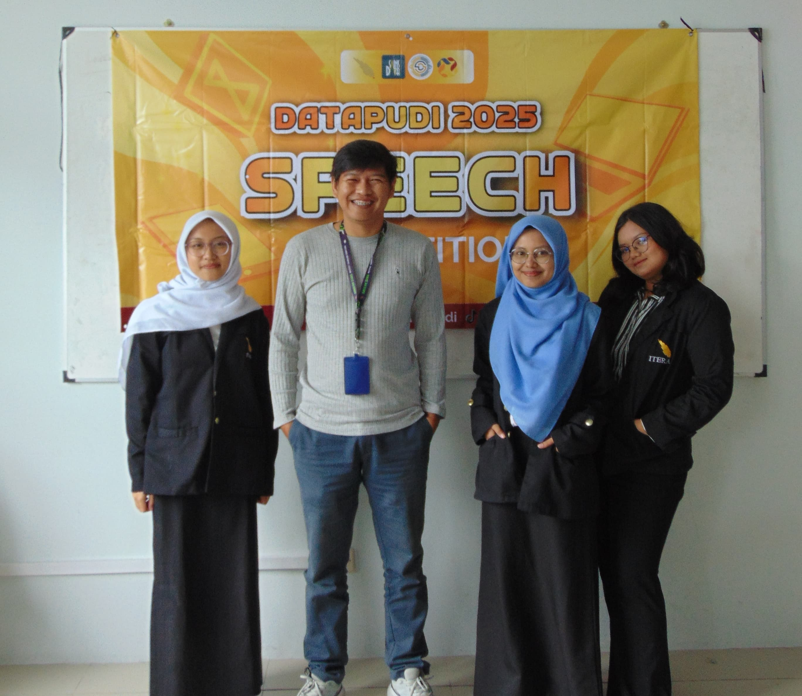 📍 Dies Natalis Sains Data ITERA X HMSD Adyatama
📅 17 Mei 2025
Saya meraih Juara 2 dalam lomba Speech Competition yang diselenggarakan dalam rangka Dies Natalis Sains Data ITERA. Lomba ini menjadi kesempatan bagi saya untuk mengasah kemampuan berbicara di depan umum dalam bahasa Inggris dan menambah pengalaman berharga di dunia kompetisi akademik.
 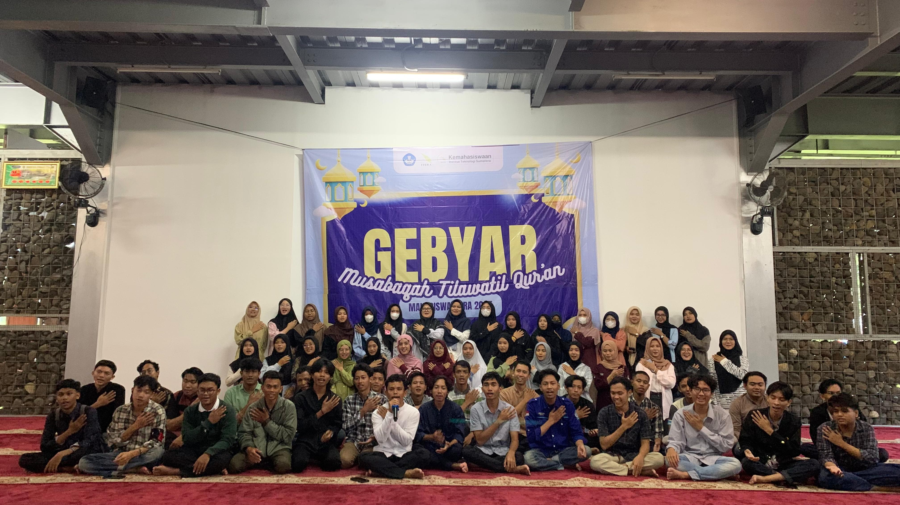
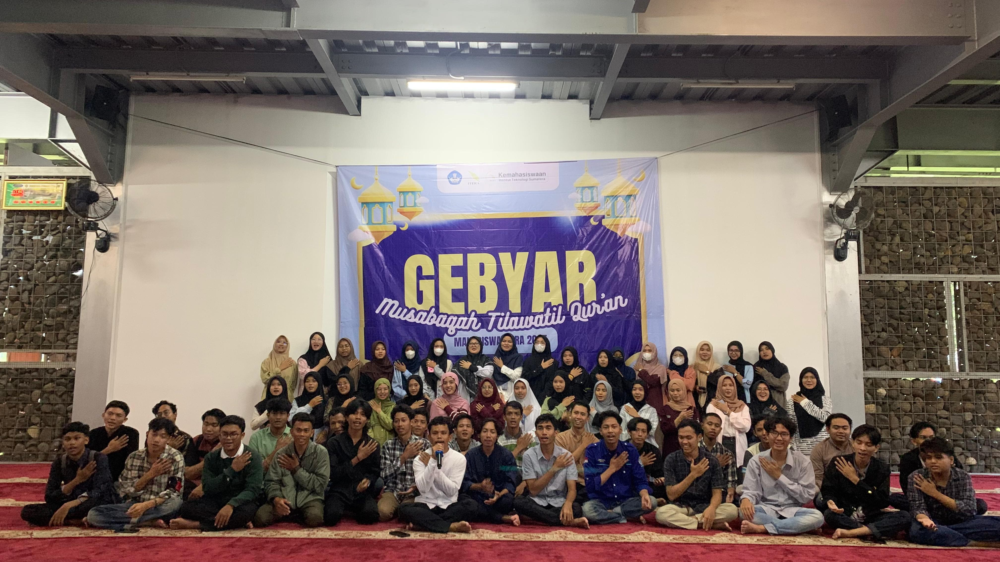
📍MTQ ITERA X Rafatera 2025
📅 8–16 Maret 2024
Pada tanggal 8 hingga 16 Maret 2024, saya bersama tim mengikuti cabang lomba Fahmil Qur’an dalam rangkaian kegiatan MTQ ITERA X RAFATERA 2025. Dalam ajang ini, kami berhasil meraih Juara 1 setelah melalui serangkaian babak penyisihan dan final yang kompetitif. Tim kami terdiri dari saya sendiri (Program Studi Teknik Informatika), Sarah Rizkia Alya Rahman (Program Studi Biomedis), dan Aisyah Indria Mardhati Utomo (Program Studi Desain Komunikasi Visual). Keikutsertaan dalam lomba ini menjadi pengalaman yang sangat berharga, karena tidak hanya mengasah pemahaman kami terhadap Al-Qur’an dan nilai-nilai keislaman, tetapi juga melatih kerja sama tim, ketepatan berpikir, serta kecepatan dalam merespons berbagai bentuk soal.
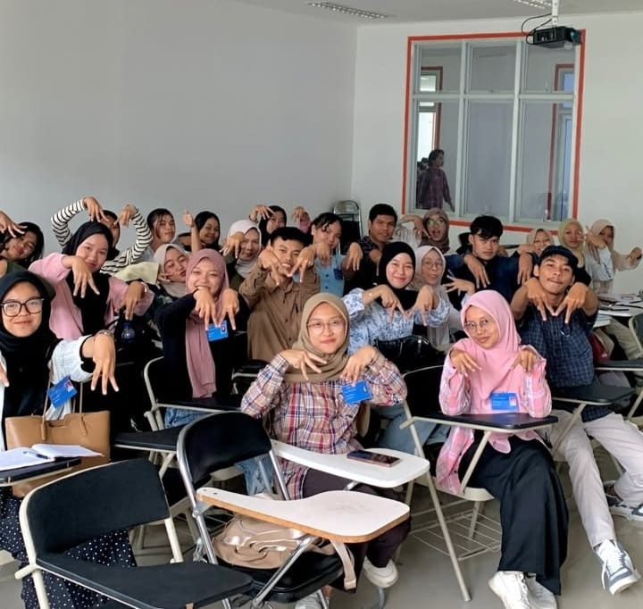
📘 Asisten Tutorial – Brainboost Week
📍 Institut Teknologi Sumatera (ITERA)
📅 22 Mei 2025
Pada tanggal 22 Mei 2025, saya berpartisipasi sebagai asisten tutorial dalam program Brainboost Week yang diselenggarakan oleh Keluarga Mahasiswa (KM) ITERA. Program ini bertujuan untuk membantu mahasiswa dalam menghadapi Ujian Akhir Semester (UAS) melalui sesi belajar bersama dan pendampingan materi perkuliahan. Dalam kegiatan ini, saya berperan sebagai tutor sebaya untuk mata kuliah Matematika Dasar 2B, bersama Kak Fadli Akbar dari Program Studi Teknik Perkeretaapian. Kami membimbing teman-teman mahasiswa dalam memahami konsep-konsep penting, menyelesaikan soal latihan, serta memberikan tips belajar efektif menjelang ujian. Kegiatan ini menjadi wadah yang positif untuk saling berbagi ilmu dan memperkuat solidaritas antar sesama mahasiswa.
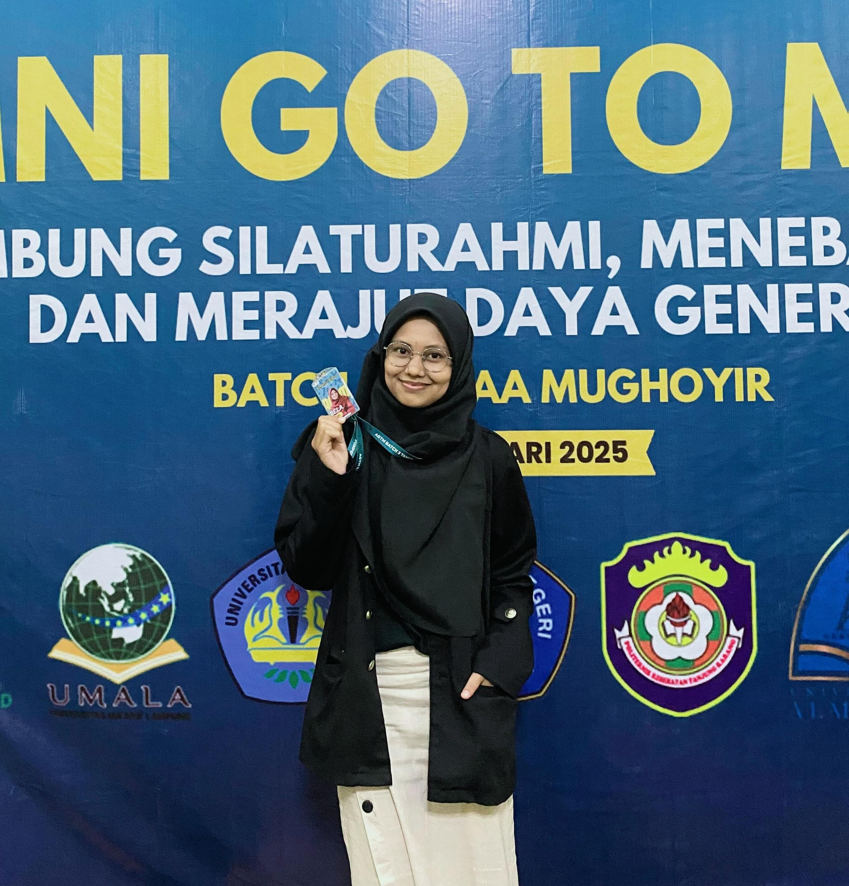 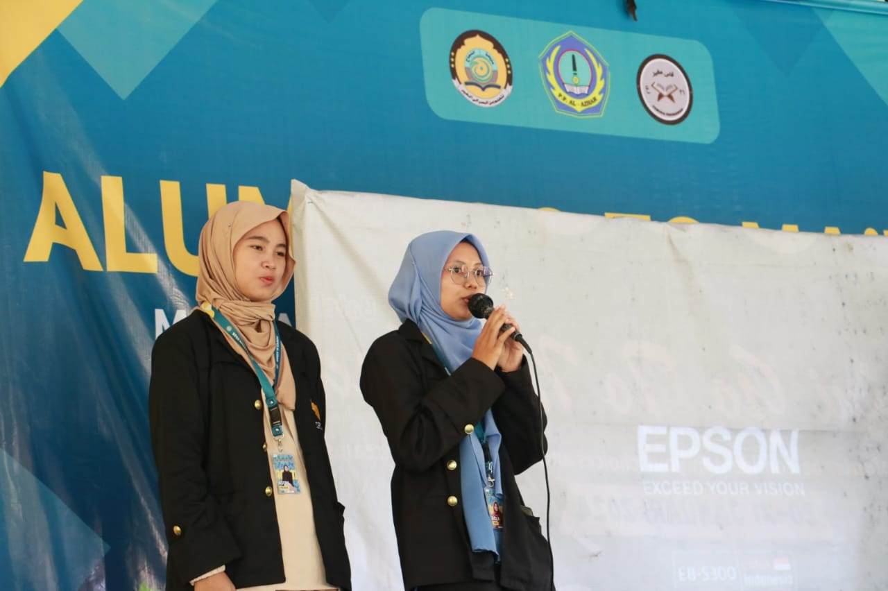
🎓 Alumni Go To Ma’had (AGTM)
📍 Pesantren Al Azhar Terbanggi Besar
📅 11 Januari 2025
Pada tanggal 11 Januari 2025, saya berpartisipasi dalam kegiatan Alumni Go To Ma’had (AGTM) yang diselenggarakan di Pesantren Al Azhar Terbanggi Besar. Dalam kegiatan ini, saya berperan sebagai pemateri dengan menyampaikan dua topik utama. Pertama, saya menyampaikan materi terkait strategi masuk Perguruan Tinggi Negeri (PTN), yang mencakup kiat-kiat memilih jalur seleksi, manajemen waktu belajar, serta pengalaman pribadi dalam menghadapi proses seleksi masuk perguruan tinggi. Kedua, saya memberikan sosialisasi beasiswa, meliputi jenis-jenis beasiswa yang tersedia, alur pendaftaran, serta tips dalam mempersiapkan dokumen dan wawancara. Kegiatan ini dikemas dalam suasana expo yang inspiratif dan interaktif, dengan tujuan memberikan wawasan dan motivasi kepada para santri dalam merencanakan masa depan pendidikan mereka.
 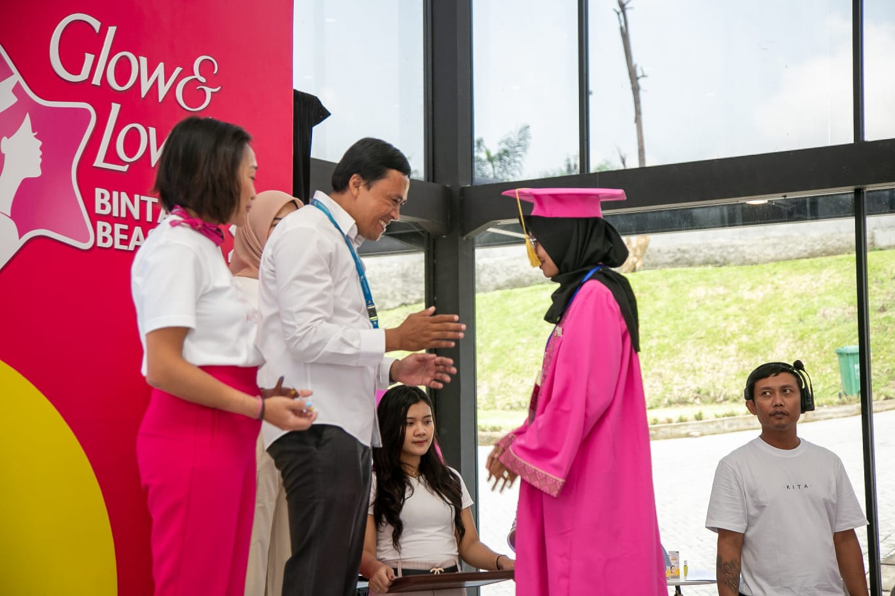
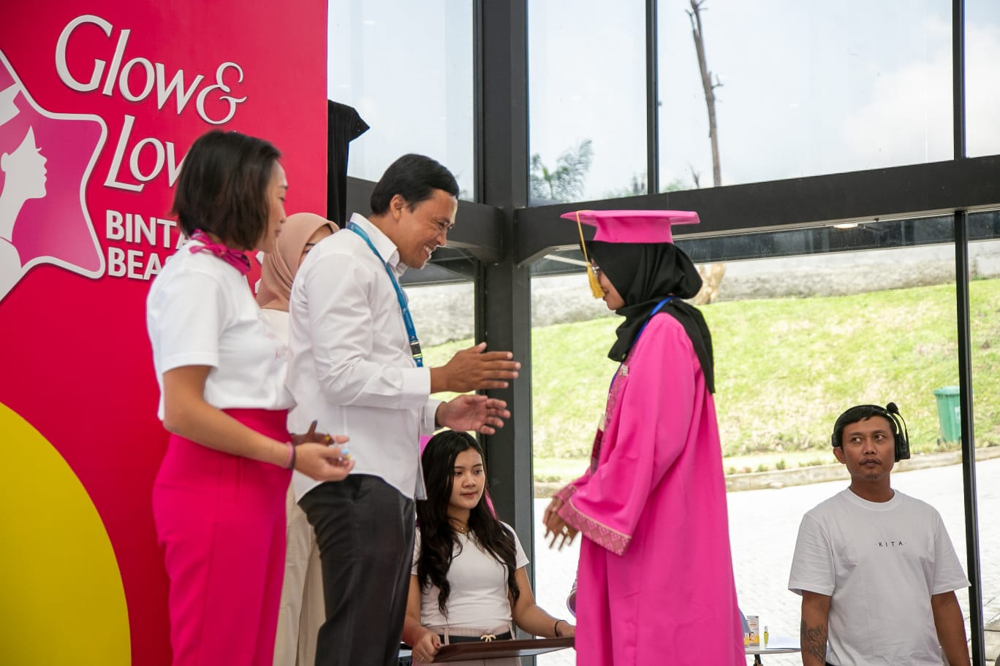
🎓 Inaugurasi Penerima Beasiswa Glow & Lovely
📍 Yogyakarta
📅 23 November 2024
Pada tanggal 23 November 2024, saya mengikuti kegiatan Inaugurasi Penerima Glow & Lovely Bintang Beasiswa (GALBB) yang diselenggarakan di Yogyakarta. Acara ini merupakan momen penghargaan sekaligus ajang silaturahmi bagi seluruh penerima beasiswa terpilih dari berbagai daerah di Indonesia. Kegiatan ini diisi dengan berbagai rangkaian acara inspiratif seperti seminar pengembangan diri, sesi motivasi, serta perkenalan dengan komunitas Glow & Lovely. Melalui kegiatan ini, saya mendapatkan pengalaman berharga, semangat baru, serta jaringan positif yang mendukung perkembangan akademik dan personal saya sebagai penerima beasiswa.
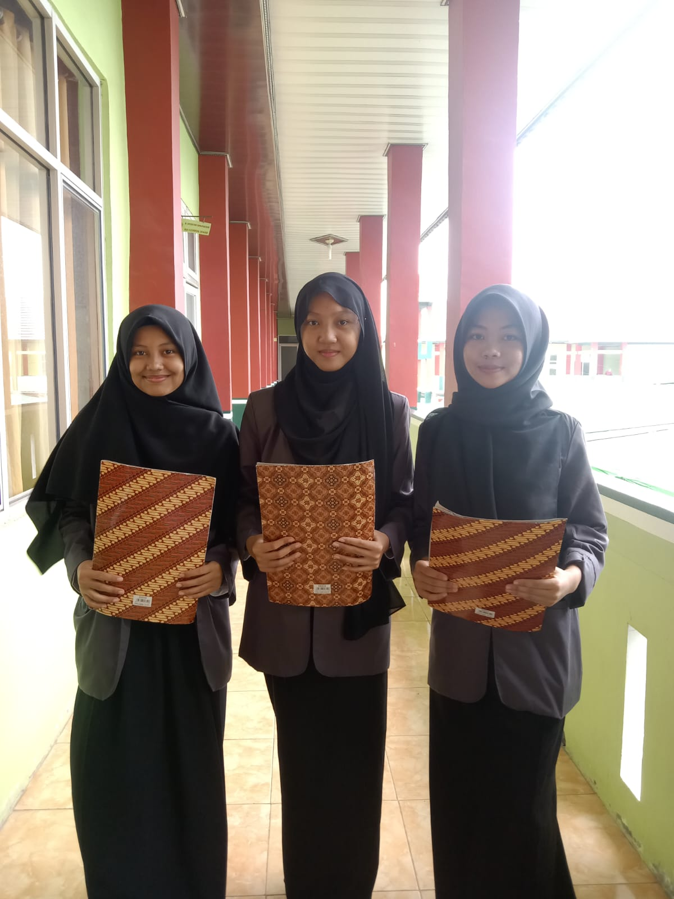🎤 Master of Ceremony (MC) Bahasa Arab – Acara P5
📍 MAN 1 Lampung Tengah
📅 31 Januari 2024
Pada tanggal 31 Januari 2024, saya berkesempatan untuk menjadi Master of Ceremony (MC)Master of Ceremony (MC) berbahasa Arab dalam kegiatan Proyek Penguatan Profil Pelajar Pancasila (P5) di MAN 1 Lampung Tengah. Peran ini saya jalankan dalam rangka mendukung suasana acara yang edukatif dan berwawasan kebinekaan global, serta untuk mengembangkan kemampuan berbahasa asing dalam konteks formal. Kegiatan ini memberikan pengalaman berharga dalam hal public speaking, penguasaan bahasa Arab, serta pengelolaan acara secara terstruktur dan komunikatif di hadapan audiens yang beragam.
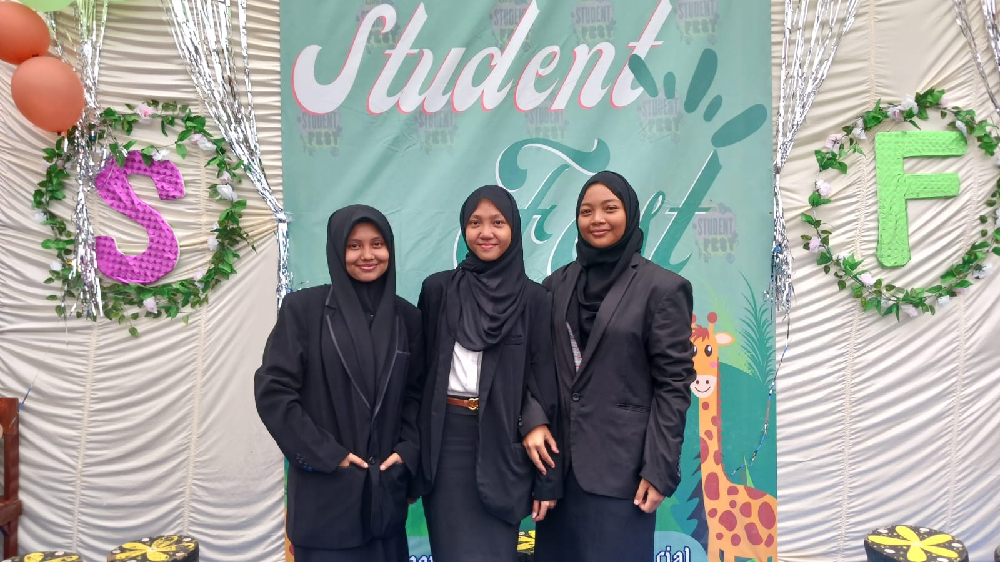 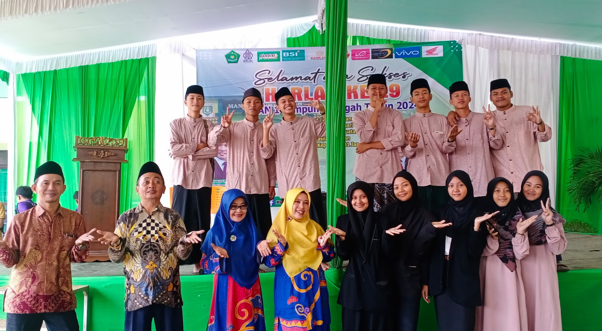🎤 Master of Ceremony – Student Fest
📍 MAN 1 Lampung Tengah
📅 28 Januari 2024
Pada tanggal 28 Januari 2024, saya dipercaya menjadi Master of Ceremony (MC) dalam kegiatan Student Fest yang diselenggarakan di MAN 1 Lampung Tengah. Acara ini merupakan ajang kompetisi berskala provinsi yang diikuti oleh pelajar dari berbagai sekolah di Lampung, dengan menghadirkan beragam lomba di bidang olimpiade akademik, seni, dan olahraga. Sebagai MC, saya bertugas memandu jalannya acara secara runtut, interaktif, dan kondusif, mulai dari pembukaan hingga penutupan. Peran ini memberikan pengalaman berharga dalam bidang public speaking, manajemen acara, serta membangun komunikasi yang baik dengan peserta dan audiens dalam skala besar.
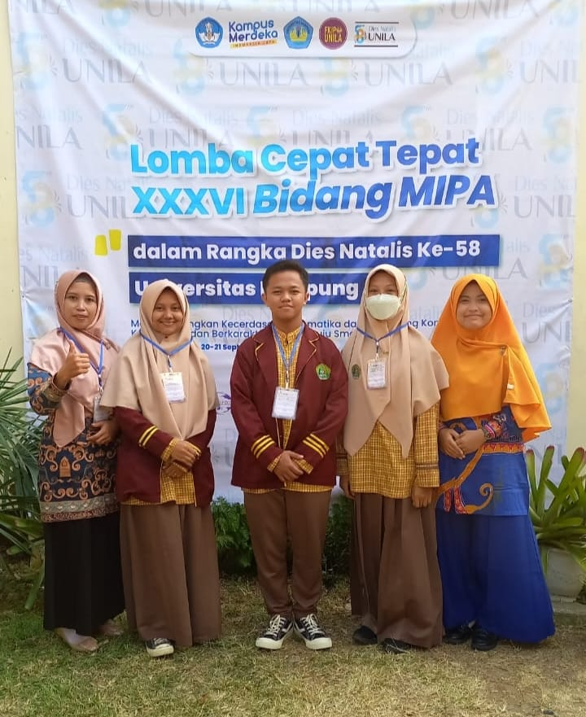 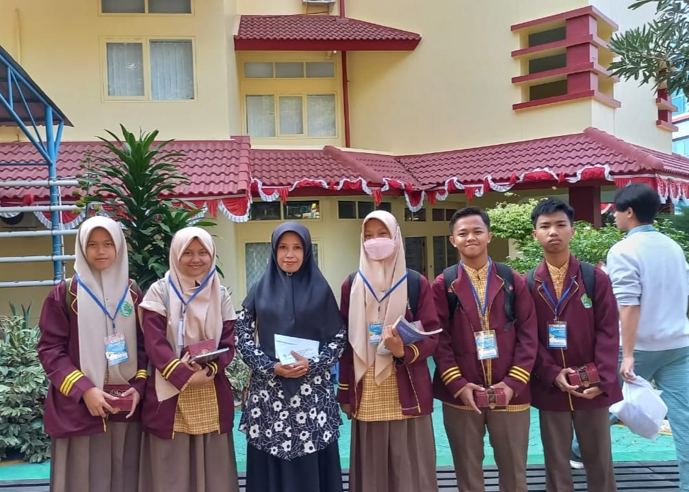 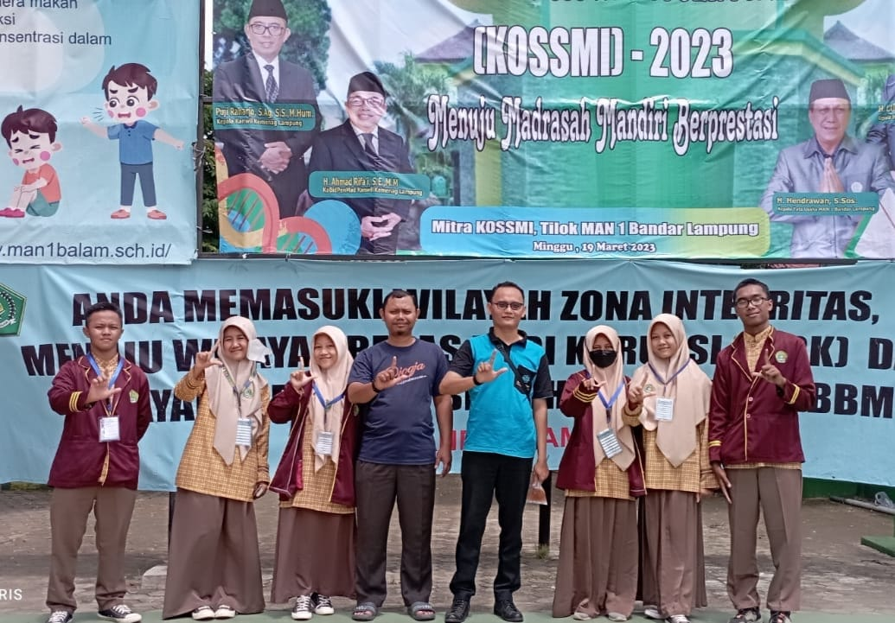🧠 Olimpiade & Lomba Cerdas Cermat
📍 Universitas Lampung
📅 September 2023
Pada bulan September 2023, saya berpartisipasi dalam kegiatan Olimpiade dan Lomba Cerdas Cermat (LCC) yang diselenggarakan di Universitas Lampung (Unila). Meskipun belum berhasil meraih juara, kegiatan ini memberikan pengalaman yang sangat berharga dalam hal penguasaan materi, kerja sama tim, serta kemampuan berpikir cepat dan tepat dalam suasana kompetitif. Selain itu, pada tahun yang sama saya berhasil menjadi Semifinalis bidang Matematika Kompetisi Sains Siswa Muslim Indonesia (KOSSMI) 2023, sebuah ajang kompetisi nasional yang menantang pemahaman dan analisis peserta dalam bidang sains yang terintegrasi dengan nilai-nilai keislaman. Pada tahun 2022, saya juga berkesempatan mengikuti Olimpiade Sains Nasional (OSN) tingkat provinsi sebagai perwakilan Kabupaten Lampung Tengah. Pengalaman ini menjadi bagian penting dalam proses belajar dan pengembangan diri saya, serta memotivasi saya untuk terus belajar dan berkompetisi dengan semangat yang lebih baik di masa depan.
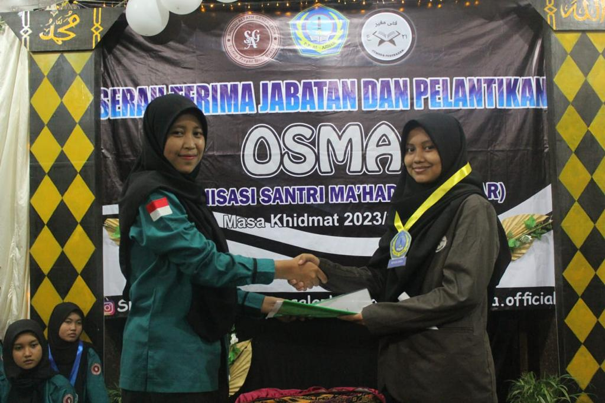🌸 Pelantikan Ketua Akhwat
📍 Pondok Pesantren Al Azhar Terbanggi Besar
📅 12 Februari 2023
Pada tanggal 12 Februari 2023, saya resmi dilantik sebagai Ketua Akhwat Pondok Pesantren Al Azhar Terbanggi Besar. Amanah ini saya emban sebagai bentuk tanggung jawab untuk mengoordinasikan kegiatan keputrian, membina ukhuwah antar santri, serta mendampingi berbagai program keislaman dan pengembangan karakter santri akhwat di lingkungan pesantren. Pelantikan ini menjadi awal dari perjalanan kepemimpinan yang menantang namun penuh makna, serta menjadi pengalaman penting dalam mengasah jiwa tanggung jawab, komunikasi, dan manajemen organisasi di lingkungan pesantren.
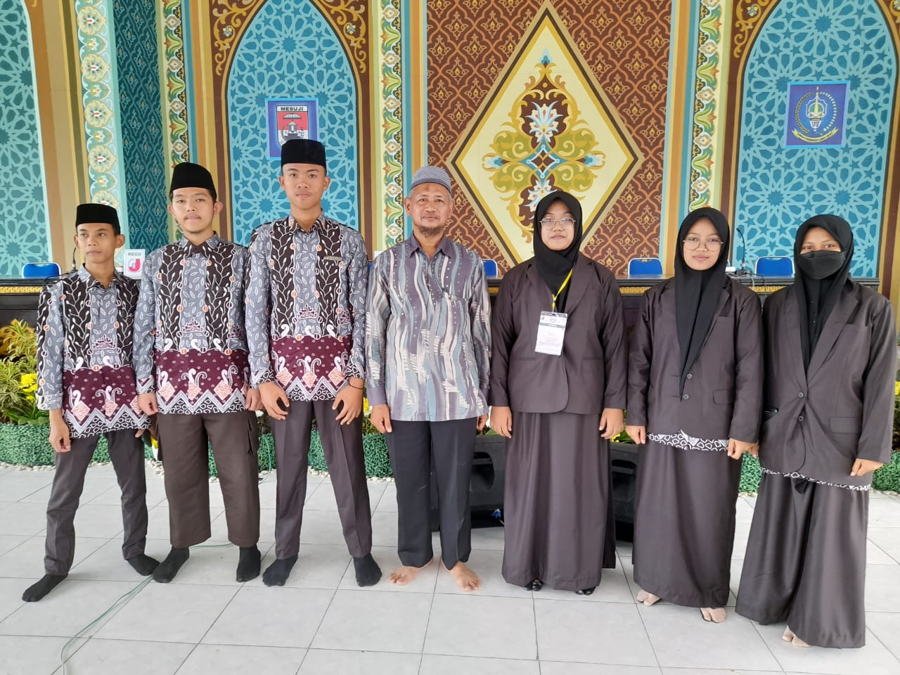 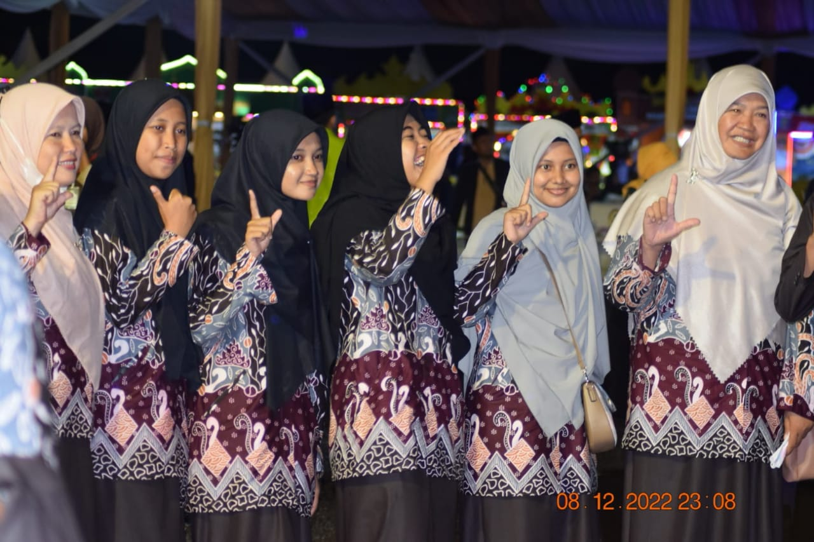📖 Fahmil Qur’an – MTQ ke-49 Tingkat Provinsi
📍 Kabupaten Mesuji, Lampung
📅 Desember 2023
Pada bulan Desember 2022, saya menjadi salah satu peserta cabang Fahmil Qur’an mewakili Kabupaten Lampung Tengah dalam ajang Musabaqah Tilawatil Qur’an (MTQ) ke-49 tingkat Provinsi Lampung yang diselenggarakan di Kabupaten Mesuji.Dalam perlombaan ini, saya bersama tim mengikuti serangkaian babak kompetisi yang menantang pemahaman mendalam terhadap Al-Qur’an, Hadis, fiqih, sejarah Islam, serta isu-isu keislaman kontemporer. Kegiatan ini memberikan pengalaman yang sangat berharga, tidak hanya dalam menguji kemampuan intelektual dan spiritual, tetapi juga dalam mempererat kerja sama tim dan semangat fastabiqul khairat di tengah atmosfer kompetitif tingkat provinsi.
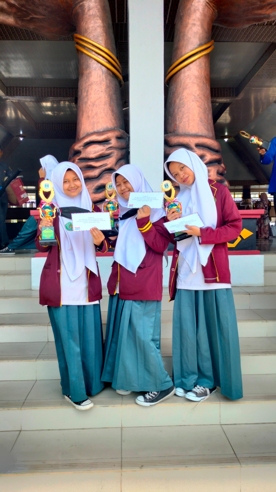 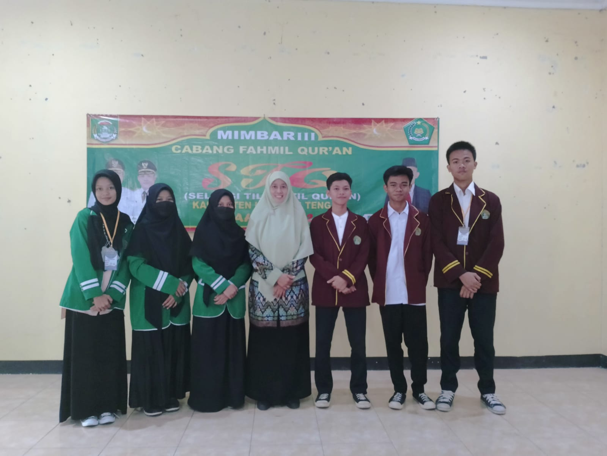📖 Seleksi Tilawatil Qur’an (STQ) – Cabang Fahmil Qur’an
📍 Kota Gajah, Lampung Tengah
📅 Juli 2022
Pada bulan Juli 2022, saya mengikuti cabang Fahmil Qur’an dalam ajang Seleksi Tilawatil Qur’an (STQ) tingkat Kabupaten Lampung Tengah yang diselenggarakan di Kecamatan Kota Gajah.Kegiatan ini merupakan ajang seleksi resmi untuk menjaring peserta terbaik yang akan mewakili kabupaten pada tingkat provinsi. Dalam perlombaan ini, saya bersama tim menguji kemampuan dalam memahami dan menjawab soal-soal seputar Al-Qur’an, Hadis, fiqih, sejarah Islam, serta isu-isu keislaman lainnya dengan cepat, tepat, dan kompak.STQ ini menjadi salah satu pengalaman awal yang sangat berkesan dalam perjalanan saya di dunia Fahmil Qur’an, serta menjadi pijakan penting dalam mengembangkan wawasan keislaman dan kerja tim.